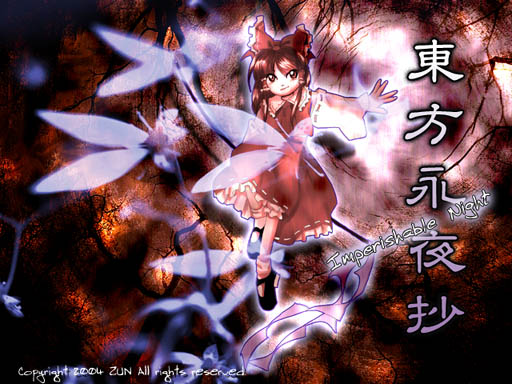

平和な夜だった。 何事も起きていなかった。少なくとも人間にはそう見えていたのだ。 そんな人間のもとに妖怪が訪れる。 いつもなら妖怪退治は人間の役目だ。だがこんな『異変』が起きている と言うのに、人間は一向に動こうとしないので痺れを切らした、と言う。 だが人間は、そのとき初めて『異変』に気が付いたのだ。 妖怪退治が役目の人間は、 『この異変』を、夜が明ける前に解決出来るだろうか、と言った。 だが妖怪は言う、 『こんな異変』は、夜を止めてでも今夜中に解決させる、と。 妖怪は、月の欠片を求めて夜の幻想郷を翔け出した。 後を追うように人間も飛び出す。 魔を感じ、幻を打ち破る人間。 魔を遣い、幻を無効化する妖怪。 ―― 二人は、夜を止める 東方永夜抄 〜 Imperishable Night. |

|
東方第八弾「東方永夜抄 〜 Imperishable Night.」は少女弾幕シューティングです。 今作品は何かと倦厭されがちな弾幕に、新しい存在価値を見出す事を目的としています。（小嘘） 今回は、人間と妖怪の二人が、夜を止めて『とある異変』の解決に挑みます。 毎度お馴染みののん気な人間と、人間を唆すやっぱりのん気な妖怪。 異変からして、今までに無く強大と思われる敵を相手に、 「霊夢＋紫の結界組」「魔理沙＋アリスの魔法使い組」「咲夜＋レミリアの紅魔組」「妖夢＋幽々子の冥界組」 ４組ののん気な人間と妖怪が立ち上がる！ 従来の高速移動（＝のん気な人間）と低速移動（＝のん気な妖怪）の二人の性質の違いを見極めて、 幻を見破ったり無視したり、魔を倒したり遣ったり、弾幕を避けたり眺めたりしながら『刻符』を集めましょう。それはもう大量に。 『刻符』は時刻の進み方を変える力を持ちます。これで夜を止め、夜が明ける前に異変を解決出来るでしょうか？ 儚い幻想郷の夜の命運は、のん気な彼女達の手に委ねられた……んだけど、良いんでしょうか、ほんと。 ＊このゲームには過激な弾幕シーンが含まれております 小さなお子様や、弾幕アレルギーの方は医師に相談してください。 |
| ・バックストーリー |
| ・スナップショット |
| ・マニュアル |
| ・ダウンロード（体験版、アップデートパッチ） 04/08/19 更新 |
| 今後の予定 | |
|---|---|
| ○体験版PlusCD | 4/18「博麗神社 例大祭」にて配布 |
| ○体験版ダウンロード | 5/14 開始いたしました |
| ○製品版 | 夏コミにて発表予定、その後、各同人ショップでも委託販売が開始する予定です。 |
| 体験版と製品版の違い 体験版は３面までしか遊べません。 またプラクティスモード、エキストラスタートは使用できません。 あと、全12タイプの自キャラのうち、専用ストーリーのある4タイプのみ選択可能です。 | |
| 体験版Plusとダウンロード版体験版の違い ＢＧＭが完全に利用できるのは体験版Plusのみとなります。 ダウンロード版の体験版は、曲はMidiしか使用できません。 折角あわせた曲と場面のタイミングもずれてしまいます…。 なお、体験版Plusの曲データは、ダウンロード版体験版にも使用できます。 | |
| 動作環境 | |
|---|---|
| 必須環境 | |
| ＯＳ | Windows 98/SE/ME/2000/XP なお、DirectX 8.0 以上がインストールされていること |
| ＣＰＵ | Pentium 以降（もしくは互換）のCPU （推奨 500MHz以上） |
| メインメモリ | 空き実メモリ 64M以上必要 |
| ビデオカード | DirectX8.0以上の DirectGraphic 対応の高速なビデオカード(必須 VRAM16M以上) 今のところ正常に動くことが確認取れているビデオカード ・nVIDIA GeForce シリーズ ・ATI RADEON シリーズ 等 |
| 推奨環境 | |
| サウンド | Direct Sound対応のサウンドカード （BGMに MIDIを使用する場合）sc-88Pro(Roland)もしくは上位の MIDI音源 |
| その他 | パッドコントローラ ある程度の弾幕免疫 幻視能力 |